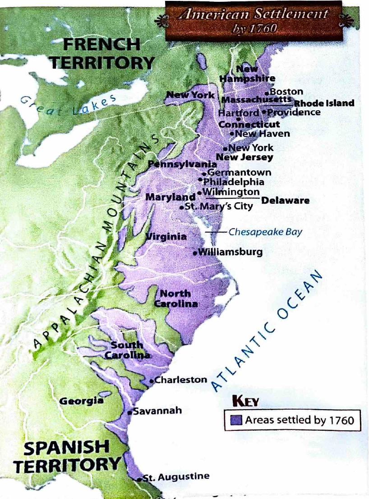

Printed page 42
Colonial America
Use the map on p. 104 in the student text NWHG to answer the following questions.
Multiple-choice activity · Choose one answer for each question. Read-aloud includes the choices. Your teacher grades submitted work. These questions are adapted for Harlan; they are not exact textbook quotations.
Use the original textbook map below. Read the directions and choose your answers. Filled blue workbook answers are excluded from the reading.

Use the map on p. 104 in the student text NWHG to answer the following questions.
Compared with Skills Sheet 22, source PDF page 25, printed page 42. All five question prompts and the original map-reference direction are retained, with multiple-choice responses. The source expected answer for question 3 specifies New England and the Middle Colonies; the earlier general Atlantic Coast option has been corrected. The map is an unaltered rectangular crop from Chapter 7, printed page 104. No answer-filled workbook scan is included.